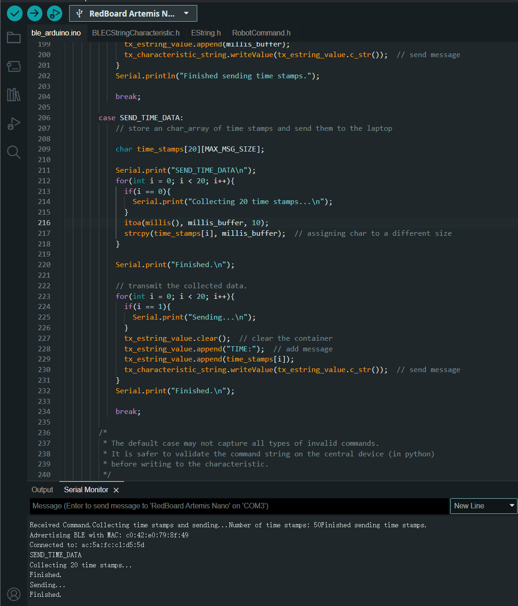
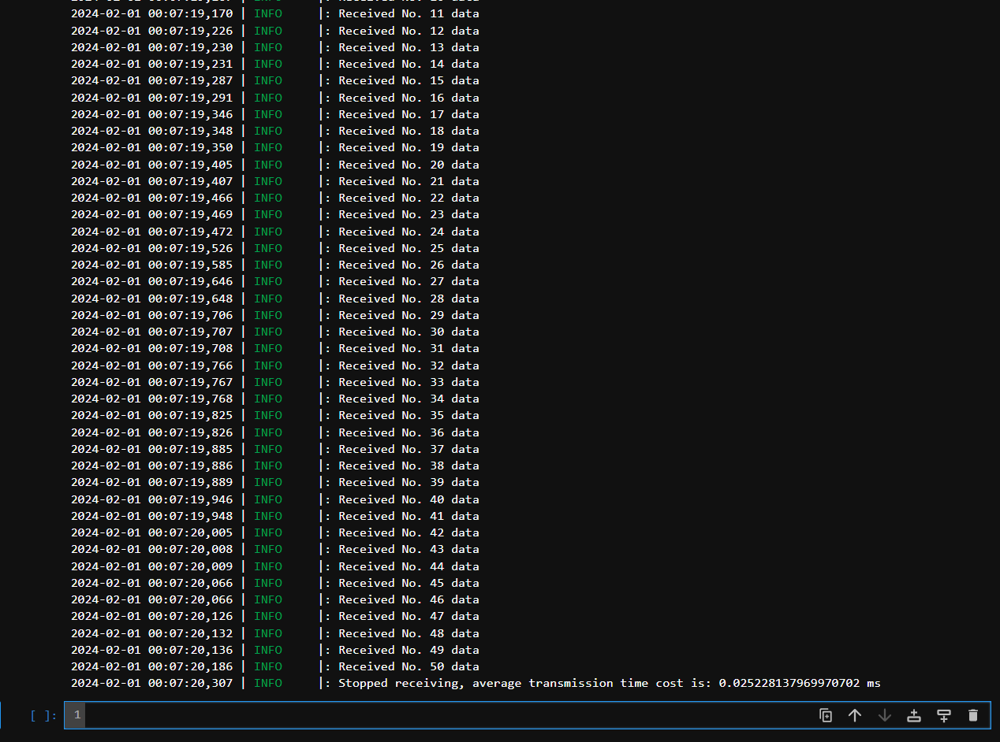

Objectives
Continuing from the previous part, get familiar with BLE data transmission features between PC and board in addition to serial connection.
Prelab
Same from the previous lab.
Task 1: Echo Between Board and PC
As the pictures below show, the computer sends a command "ECHO" along with an attached message to the board. The board returns the echoed message which starts with "ECHO BACK - " to the computer, along with the attached message from the computer.
Task 2: PC Sends GET_TIME_MILLIS and Receives Time Stamp
We first modify the command lists on both PC and the board. To ensure the commands match, make sure the order of added commands align. Below shows the modifed commands.

Then, we add a new case branch to the board, which is executed when the given command is GET_TIME_MILLIS (int 6). The board will print the received command in the serial monitor.
After those, we can establish connection and send command. The log information shows the received time stamp on the PC, which consists of the command sent and the returned time stamp in milliseconds. The result is shown below.
Task 3: PC Sets Up Notification Handler
Notification handler enables the receiver to wait for incoming data in the backstage, allowing main thread to proceed. In this task, the PC first defines a callback function (handler function) which is to be triggered by the incoming BLE message. Then we input the callback function to the "start_notify" function which monitors the incomming data. When there is an incoming data, it will be input into the callback function.
The above picture shows we first start the notification handler, after that, we send a command "GET_TIME_MILLIS" to the board. The board will return a string as in task 2. The PC captures the time stamp and the handler prints the time stamp in the log info.
When we received the message, we can close the notification handler as the cell 78 shows in the above picture.
Task 4: PC Receives Continuous Time Stamps from Board
As the picture below shows, the PC sends a "MEASURE_SPEED" command and specify the time stamp samples needed by giving the attached message. When the attached message is 50, the board returns 50 time stamps continuously. In this task, the time stamps are collected while sending.
Similar to the previous task, the PC gets incoming data by enabling the notification handler. The returned time stamps will be displayed using log info.
Having stored all the data received, we can calculate the average speed for each cycle of reading time stamp and transmission, as printed below cell 19 in the picture above.
Task 5: Board Sends Time Stamps from an Array
As shown below, when the board receives command "SEND_TIME_DATA", it will firstly store 20 time stamps using a for loop. After that, the next for loop will read and send the stored elements from the array.

In the PC, it receives incoming data via the notification handler.
As can be seen, the 20 received time stamps share the same value, but the it takes about 0.4s for the receiver to finish parsing data. In average, each transmission takes 20ms from board to the PC. which is slightly faster than the previous method.
Task 6: PC Sends GET_TEMP_READINGS to Get Temperature Readings with Time Stamps
Similar with the previous task, the board read 5 temperatures, fit the raw readings from die into F-degrees and convert them into strings to be stored in an array. After that, a for loop will send the data.
The PC receives messages using notification handler. As shown below. The notification handler will terminate itself when it gets desired amount of data.
Discussion: Compare the Two Sending Methods
The advantage of collecting data first before sending is that the data can be captured without large time intervals. The sampling frequency can be very high when we want to sample contunous signals. But when we are sampling at a very high frequency, the data can be huge for a MCU to store in the RAM. On the other hand, if we send each data immediately after we fetch it, the amount of RAM space needed is approximately equal to the size of each data. Also, if the master controller needs real-time data for processing, we have to send data while collecting them. However, it comes with larger sampling intervals and lower channel efficiency.
Additional Task 1: Effective Data Rate and Overhead
As shown below, the board generates 5 and 120 byte long data and store them into arrays. Then it uses a for loop to send the data. The PC receives data using the notification handler and calculate the average time cost for each transmission.
The images below shows the average time cost for each transmission.
For the 5-byte data: 0.025228ms each, Byte Rate = 0.198k byte/s. See the picture below.

For the 120-byte data: 0.063462ms each, Byte Rate = 1.8k byte/s. See the picture below.
Other data lengths are also tested, see results below.
5 byte: 0.025228ms each, Byte Rate = 0.198k byte/s.
10 byte: 0.022933ms each, Byte Rate = 0.436k byte/s.
20 byte: 0.025043ms each, Byte Rate = 0.798k byte/s.
30 byte: 0.040832ms each, Byte Rate = 0.743k byte/s.
40 byte: 0.048085ms each, Byte Rate = 0.831k byte/s.
50 byte: 0.036999ms each, Byte Rate = 1.351k byte/s.
60 byte: 0.060018ms each, Byte Rate = 0.999k byte/s.
70 byte: 0.059958ms each, Byte Rate = 1.167k byte/s.
80 byte: 0.063441ms each, Byte Rate = 1.261k byte/s.
90 byte: 0.067232ms each, Byte Rate = 1.338k byte/s.
100 byte: 0.063595ms each, Byte Rate = 1.572k byte/s.
110 byte: 0.127272ms each, Byte Rate = 0.864k byte/s.
120 byte: 0.063462ms each, Byte Rate = 1.891k byte/s
130 byte: 0.165644ms each, Byte Rate = 0.784k byte/s.
150 byte: 0.102010ms each, Byte Rate = 1.470k byte/s.
The data rate diagram is shown below.
Additional Task 2: Reliability
Usually, the receiver will run an individual thread (tasks in RTOS) to detect whether there's an incoming data in the register. When the data is available, the receiver will be able to retrieve the new data and be ready for the next data. The speed of such process is largely dependent on the operating frequency of the controller. The Artemis is not likely to exceed the limit of PC's receiving capacity. Thus the PC will always read all data published from the board. On the other hand, if the receiver's buffer is not enough to save a whole data, it is likely to lose some part of the original data.
THE END